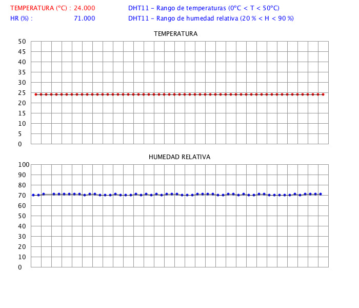

Representación gráfica de medidas con Processing.

Representar gráficamente en la pantalla del ordenador mediante un programa en Processing los datos obtenidos de temperatura y humedad.
Una vez obtenidos los datos de temperatura y humedad a través del sensor DHT11 desde Arduino, enviamos, a través del puerto serie, estos datos al PC, donde tenemos ejecutando un programa en Processing que está "escuchando" el puerto serie, obteniendo los datos y representándolos en pantalla. Simultáneamente guardamos los datos en un archivo de texto que posteriormente podremos analizar en una hoja de cálculo.
IMPORTANTE: No hay que tener abierto el monitor serie del IDE de Arduino porque ocupa el puerto y, por lo tanto, no deja leer los datos a Processing.
PROGRAMA A CARGAR EN ARDUINO:
#include "DHT.h" #define DHTPIN 2 #define DHTTYPE DHT11 // DHT 11 DHT dht(DHTPIN, DHTTYPE); void setup() { Serial.begin(9600); dht.begin(); } void loop() { delay(2000); float h = dht.readHumidity(); float t = dht.readTemperature(); if (isnan(h) || isnan(t)) { Serial.println("Fallo al leer el sensor DHT11"); return; } // Únicamente enviar a Processing las variables t y h Serial.println(h); Serial.println(t); }
PROGRAMA A EJECUTAR EN PROCESSING (PC / LAPTOP):
Vamos a guardar dos archivos en Processing, al primero le llamamos visual_dot.pde y al segundo Graf.pde. Ambos los guardamos en el mismo directorio.
// visual_dot.pde // Representa puntos con los valores de Temperatura y Humedad // recogidos de Arduino con DHT11. // Jorge Muñoz, Manuel Hidalgo, Pablo Garcia, Jorge L. Loza // Licencia: GPL v3 // Este es un programa ad-hoc para demostración. // Necesita Graf.pde // Modificalo a tu gusto. // Tildes omitidas. import processing.serial.*; int x = 65, ancho = 700, alto = 600; int cFondo = 255; //Color fondo boolean flagTemp = false; boolean pH = true; boolean pT = true; float t = 100, h = 0 ; PrintWriter datos; Serial puertoArduino; Graf g = new Graf(ancho, alto, cFondo); void setup (){ size(700, 600); background(255); print(Serial.list());//Cambia el indice [1] por el que indique la consola puertoArduino = new Serial(this, Serial.list()[1], 9600); datos = createWriter("medidasT_HR.txt"); fill(255, 0, 0); text("TEMPERATURA (ºC) : ", 20, 20); fill(0, 0, 255); text("HR (%) : ", 20, 40); text("DHT11 - Rango de temperaturas (0ºC < T < 50ºC)", (ancho / 2) - 100, 20); text("DHT11 - Rango de humedad relativa (20 % < H < 90 %)", (ancho / 2) - 100, 40); pT = true; pH = true; g.cuadricula1(); g.cuadricula2(); } void draw(){ String inString = puertoArduino.readStringUntil('\n'); if (inString != null){ inString = trim(inString); if (flagTemp == false){ fill(255,255,255); noStroke(); rectMode(CORNERS); rect(140,20,200,45);//Borra lectura anterior h = float(inString); datos.print(h +" "+ TAB); flagTemp = true; fill (0,0,255); text(h, 140, 40); println("Humedad Relativa (%) :", h); if (h >= 20.0 && h <= 90.0){ g.puntosH(x, h, pH); } pH = false; } else{ fill(255,255,255); noStroke(); rectMode(CORNERS); rect(140,5,200,25); //borra lectura anterior t = float(inString); datos.println(t); flagTemp = false; fill (255,0,0); text(t, 140, 20); println("Temperatura (ºC) : ", t); if (t >= 0.0 && t <= 50.0){ g.puntosT(x, t, pT); } pT = false; } x = x + 5; } if (x > ancho - 60) { x = 60; pT = true; pH = true; g.borra(); g.cuadricula1(); g.cuadricula2(); } } void keyPressed() {//Presionar 'ESC' para salir datos.flush(); datos.close(); exit(); }
// Graf.pde // Representa puntos con los valores de Temperatura y Humedad // recogidos de Arduino con DHT11. // Jorge Muñoz, Manuel Hidalgo, Pablo Garcia, Jorge L. Loza // Licencia: GPL v3 // Este es un programa ad-hoc para demostración. // Clase incorporada a visual_dot.pde // Modificalo a tu gusto. // Tildes omitidas. class Graf { int nX, nY, colF; int anteriorXT , anteriorXH; float anteriorYT, anteriorYH; //boolean primeroT, primeroH; Graf (int x, int y, int cF){ nX = x; nY = y; colF = cF; } void cuadricula1(){// Temperatura fill(0, 0, 0); text("TEMPERATURA", (nX / 2) - 50, 70); stroke(150); for (int j = 60 ; j <= nX - 60; j = j + 20){ line (j, 80, j, (nY / 2) - 20); } // Vert for (int j = 80 ; j <= (nY / 2) - 20; j = j + 20){ line (60, j, nX - 60, j);} // Horiz int i = 0; for (int n = (nY / 2) - 20; n >= (nY / 2) - 220; n = n - 20){ fill(0, 0, 0); text(i, 35, n + 5); i = i + 5; } } void cuadricula2(){// Humedad fill(0, 0, 0); text("HUMEDAD RELATIVA", (nX / 2) - 60, (nY / 2) + 10); stroke(150); for (int j = 60 ; j <= nX - 60; j = j + 20){ line (j, (nY / 2) + 20 , j, nY - 80);} // Vert for (int j = (nY / 2) + 20 ; j <= nY - 80; j = j + 20){ line (60, j, nX - 60, j);} // Horiz int i = 0; for (int n = nY - 80; n >= nY - 280; n = n - 20){ fill(0, 0, 0); text(i, 35, n + 5); i = i + 10; } } void borra(){ fill(colF); // Color del fondo noStroke(); rectMode(CORNERS); rect(50 , 50, nX , nY - 30 ); } void puntosT(int x, float tem, boolean primeroT){ float vT = map(tem, 0, 50, (nY / 2) - 20 , 80); ellipse(x, vT, 5, 5); if (primeroT == false){ stroke(50); line(anteriorXT, anteriorYT, x, vT); } anteriorXT = x; anteriorYT = vT; } void puntosH(int x, float hum, boolean primeroH){ float vH = map(hum, 0, 100, nY - 80, (nY / 2) + 20); ellipse(x, vH, 5, 5); if (primeroH == false){ stroke(50); line(anteriorXH, anteriorYH, x, vH); } anteriorXH = x; anteriorYH = vH; } }